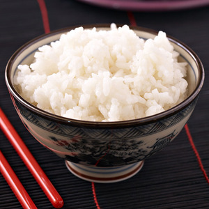
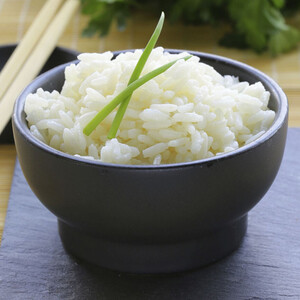
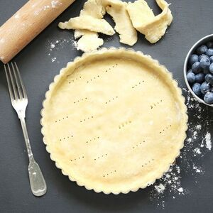
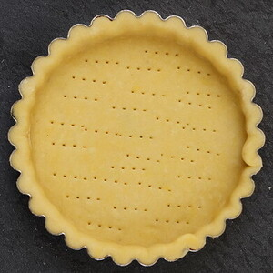
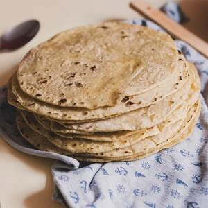
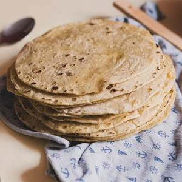

-
Fond de volaille
- Ingrédients :
- 1 carcasse de volaille
- 1 oignon
- 1 carotte
- 3 branches de thym
- 3 branches de persil
- 3 gousses d'ail
- Une pincée de sel
- Préparation :
- - Faire brunir la carcasse à 200°C pendant 20-30 suivant la taille de la carcasse
- - Mettre la carotte, les ails, le thym et le persil dans grande casserole
- - Couper l'oignon en deux puis le brûler avec un chalumeau ou une poêle
- - Rajouter la carcasse, l'oignon puis remplir d'eau jusqu'au niveau de la carcasse
- - Faire bouillir puis frémir pendant au moins 2h
- - Vous pouvez accentuer le goût du bouillon en remettant de l'eau puis en le faisant réduire 2h à nouveau
- - Passer à la passoir l'intégralité du contenu de la marmitte, puis passer le bouillon au chinois
-
Le riz japonais
- Ingrédients pour 2 portions :
- 200g de riz japonais
- Préparation :
- - Bien rincer le riz
- - Le mettre dans une casserole avec un peu plus d'eau que de riz
- - Mettre le feu fort. Une fois que l'eau, bout couvrir
- - Faire cuire à feu doux pendant 12 min
- - Remuer de temps en temps pour éviter que le riz accroche à la casserole
- - Une fois cuit, l'étaler sur une assiette
La pâte brisée
- Ingrédients :
- 200g de farine
- 100g de beurre pommade
- 1 pincée de sel
- 2 cuillères à soupe de sucre si pâte sucrée
- 50ml d'eau tiède
- Préparation :
- - Mélanger la farine et le sel (et le sucre) dans un saladier
- - Ajouter le beurre et l'incorporer en mélangeant avec une fourchette
- - Au bout de 2/3 minutes, on doit obtenir une texture semoule
- - Incorporer rapidement l'eau
- - Pétrir légèrement pour obtenir une pâte homogène
- - Emballer la pâte dans du film alimentaire
- - Laisser reposer 20 minutes au frais
La pâte à pizza


- Ingrédients :
- 250g de farine à pizza
- 13g de levure fraîche
- 2 cuillères à soupe d'huile d'olive
- 2 pincées de sel
- 150ml d'eau tiède
- Préparation :
- - Mettre la farine dans un saladier et former un puits
- - Mettre la levure au centre et rajouter le sel autour du puits
- - Ajouter l'huile d'olive autour du puits
- - Mélanger rapidement
- - Ajouter l'eau tiède quart par quart et mélanger à chaque ajout
- - Pétrir la pâte à la main afin d'obtenir une pâte souple et légèrement collante
- - Ajuster avec de la farine ou de l'eau selon la texture de la pate (plus ou moins collante)
- - Faire reposer la pâte au moins 1h dans un saladier recouvert d'un torchon légèrement humide
Les pains burgers
- Ingrédients (pour 4 pains d'environ 140g chacun) :
- 330g de farine à pizza
- 6g de sel
- 10g de sucre
- 10g de levure fraîche (ou 5g de levure sèche)
- 20g de lait
- 50g d'oeuf
- 117g d'eau
- 27g de beurre pommade
- Préparation :
- - Mettre les ingrédients liquides (eau, lait, oeuf) dans le bol du batteur
- - Ajouter le reste des ingrédients
- - Avec le crochet du batteur, pétrir pendant 4 minutes en première vitesse
- - Pétrir ensuite pendant 6 minutes en deuxième vitesse
- - Graisser un plat avec un peu d'huile neutre (ISIO 4 par exemple)
- - Mettre la pâte dans le plat et couvrir
- - Laisser reposer à température ambiante pendant 45 minutes
- - Diviser la pâte en 4 morceaux égaux
- - Laisser la pâte se détendre 10 minutes
- - Façonner chaque morceau en une boule sans l'aplatir
- - Disposer les boules sur une grille avec une feuille de papier cuisson
- - Dorer chaque boule avec de l'oeuf et saupoudrer de graines de sésame
- - Placer un bol d'eau chaude (90/100°C) dans le four éteint
- - Placer la grille dans le four éteint pendant 1h (la température idéale dans le four est de 30°C)
- - Retirer la grille et le bol du four pour le préchauffer à 160°C
- - Faire cuire les pains pendant environ 18 minutes
Les tortillas
 
- Ingrédients pour 4 tortillas :
- 100g de farine de blé
- 100g de farine de maïs
- 160ml d'eau
- 4 cuillères à soupe d'huile de tournesol
- 1 cuillère à café de sel
- Préparation :
- - Mélanger les farines et le sel dans un saladier
- - Porter l’eau et l’huile à ébullition puis ajouter le mélange aux farines
- - Bien mélanger et pétrir pour former une boule de pâte lisse et homogène
- - Couvrir d’un ligne propre et laisser reposer 30 minutes
- - Séparer la pâte et former 4 boules
- - Sur un plan de travail fariné, les étaler en fines galettes
- - Faire chauffer une poêle anti-adhésive sans matière grasse
- - Faire cuire chaque galette 1-2 minutes de chaque côté
- - Déposer la tortilla dans une assiette
- - Recouvrir immédiatement d’une autre assiette pour éviter qu’elle ne se dessèche
La sauce yakiniku

- Ingrédients pour 2 portions :
- 1/4 d'oignon coupé en très petits morceaux
- 1 grosse gousse d'ail
- 3 cuillères à soupe de sauce soja
- 3 cuillères à soupe de mirin
- 1 cuillère à soupe de graines de sésame
- 1,5 cuillère à soupe de sucre
- Préparation :
- - Faire chauffer l'oignon dans une casserole à feu vif
- - Ajouter la sauce soja, le mirin et le sucre
- - Laisser bouillir une minute
- - Hors du feu, ajouter l'ail pressé et les graines de sésame
La sauce teriyaki

- Ingrédients pour 2 portions :
- 200ml de sauce soja
- 150ml de mirin
- 4 cuillères à soupe de sucre
- Préparation :
- - Mettre tous les ingrédients dans une casserole
- - Faire bouillir puis baisser le feu
- - Laisser réduire pendant 5 minutes en remuant régulièrement
La sauce lok lak

- Ingrédients pour 2 portions :
- 2 cuillères à soupe de jus de citron vert
- 1 cuillère à soupe de sauce nuoc-mâm
- 1 cuillère à soupe d'eau chaude
- 1 cuillère à soupe de sucre
- 1 pincée de poivre noir moulu
- Préparation :
- - Mélanger tous les ingrédients dans un bol
- - Laisser reposer (et c'est tout !)
Huile pimentée
- Ingrédients :
- Huile d'olive
- 5 gousses d'ail
- 3-6 piments séchés (oiseau, cayenne...)
- Préparation :
- - Retirer la peau des gousses d'ail puis émincer l'ail
(ne pas presser l'ail sinon il brûlerait trop vite) - - Mettre les piments séchés dans un bol. Il est possible de les broyer
si vous voulez rendre l'huile plus pimentée - - Faire chauffer l'huile d'olive à 150°C
- - Rajouter l'ail dans l'huile
- - Une fois que l'ail devient brun, laisser mijoter 5min,
verser ensuite l'huile dans le bol avec les piments à l'aide d'un chinois afin de la séparer de l'ail - - Laisser refroidir l'huile puis verser la préparation dans une bouteille
- - L'huile va continuer à s'imprégner des piments au fur et à mesure du temps
Sauce pimentée
- Ingrédients :
- Huile pimentée
- Jaune d'oeuf
- Moutarde
- Huile (olive ou neutre)
- 2 cuillères à café de Paprika fumé
- 2 pincées de sel
- Préparation :
- - Mélanger le jaune d'oeuf à la moutarde
- - Rajouter petit à petit l'huile tout en mélangeant fort jusqu'à avoir la consistence souhaitée
- - Rajouter le paprika fumé et le sel
- - Bien mélanger et conserver au frais
La crème Chantilly
- Ingrédients pour environ 250g de crème :
- 25cl de crème Fleurette (30% de matière grasse minimum)
- 40g de sucre glace
- 1 sachet de sucre vanillé (environ 7g)
- 1 sachet de fixe-chantilly
- Préparation :
- - Placer la crème, le bol et le fouet au congélateur pendant 15 min
- - Verser la crème dans le bol
- - Battre la crème jusqu'à ce qu'elle commence à mousser
- - Mélanger les sucres et le fixe-chantilly dans un récipient à part
- - Les ajouter à la crème
- - Battre énergiquement la crème pendant 3 à 5 minutes
- - La crème est prête une fois qu'elle est bien ferme
- - Vous pouvez conserver la crème pendant 48h au frigo